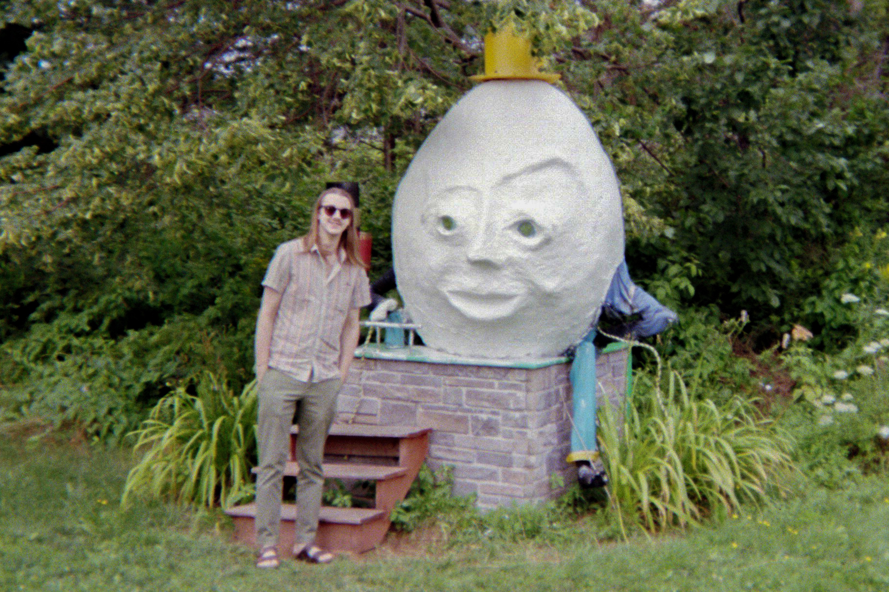

IT Systems Management & Security Student | Photographer | Musician
Welcome to my portfolio! I am an IT Systems Management and Security student at NSCC IT Campus. I am passionate about technology, music, and art. I currently work as a Repair Technician at Canada Computers where I get to build and fix computer systems for clients.
Picture of Me with Humpty Dumpty in Prince Edward Island, 2023